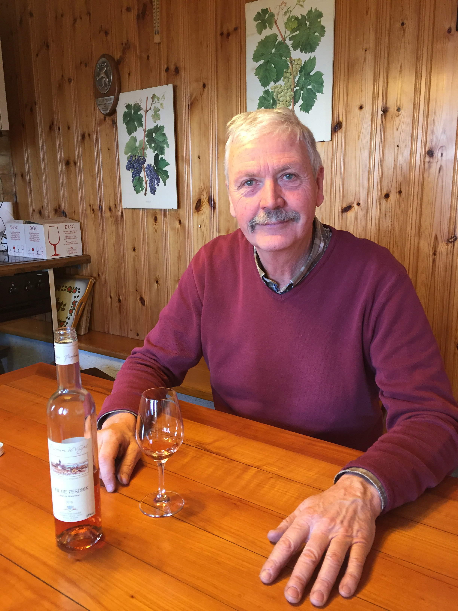

le vigneron
à l’époque où l’on était civilisé, très souvent les problèmes se discutaient à l’heure des quatre chiffres autour de deux fois trois, parfois même plus et trouvaient à chaque fois une solution « on coupe la poire en deux »
un petit coup de blanc a sauvé plus de situations, a apporté plus de solutions que l’ensemble des échanges d’ « émiles » d’aujourd’hui et en plus ça faisait du bien !
certes, certains petits coups de blanc ne faisaient pas que du bien et on disait à celui qui allait se délester de faire attention aux éclaboussures car il pourrait bien ressortir avec des sandales
mais tout à changer et les la côte sont aujourd’hui souvent sur la plus haute marche de la hiérarchie des blancs d’ici et de suisse romande, ses vignerons ayant gardé la couleur et ajouté de la saveur et de la noblesse à leurs nectars
au milieu de ce vignoble traverser chaque jour par des milliers de gens pressés et indifférents, il y a un petit village dully
dans ce petit village un grand vigneron jean-jacques steiner dont les très nombreuses distinctions (Grand Prix du Vin Suisse et Grand Or au Mondial du Pinot) ne sont que le reflet modeste d’un travail acharné, minutieux et d’un amoureux de son métier qui a un grand respect et une grande connaissance de la vigne et du vin
reconnu, il mérite d’être connu, comme ses vins !
déguster
chasselas grain blanc 2015
un tartegnin au bon goût de terroir, équilibré
un vrai plaisir à l’apéritif ou comme rincette
œil de perdrix rosé de pinot noir 2015
charmeur au possible, vous satisfera aussi bien à l’apéritif que sous la tonnelle, voire avec un curry
pinot noir château de vincy 2015
de différentes sélections de pinot, bourgogne, servagnin, cortaillod
un vrai vaudois, léger, parfait avec vos grillades l’été prochain et se mariera très bien avec un filet de perche
très sympa, léger pourrait satisfaire ceux qui préfèrent le rouge à l’apéro
pinot blanc 2015
on imagine des grains pleins de soleil qui explosent sur le palais
du caractère, du fruit, s’exprime magnifiquement, rond et long en bouche
parfait avec un poisson du lac ou un filet de féra fumé
découvrir
pinot gris 2015
une merveille – exceptionnel, enchanteur et de caractère
une grande réussite
sera parfait avec des sushis
qui ?
Jean-Jacques Steiner
Viticulteur-encaveur
Sous-les-Vignes 26
1195 Dully
021 824 11 22 – 079 420 72 89 – info@parfumdevigne.ch – www.parfumdevigne.ch
y aller
à la sortie de rolle suivre durant trois kilomètres la route cantonale en direction de genève
alors que le lac léman te tend les bras à gauche et que le clocher de bursinel apparaît en haut de la colline,
après le panneau bursinel il y en a un autre à droite qui te mènera au domaine parfum de vigne
sympa
repas gastronomique le jeudi 4 mai au restaurant du buffet de la gare à gland accompagné des vins présentés par jean-jacques steiner
Buffet de la Gare
José et Clémentina Fernandes
Route de Begnins 2
1196 Gland
022 354 16 20 – hotelglanis@bluewin.ch – www.buffet-gland.ch
le resto
Auberge Communale de Gilly
Jean-Claude Volery
Sur la Place
1182 Gilly
021 824 12 08 – aubergegilly.ch